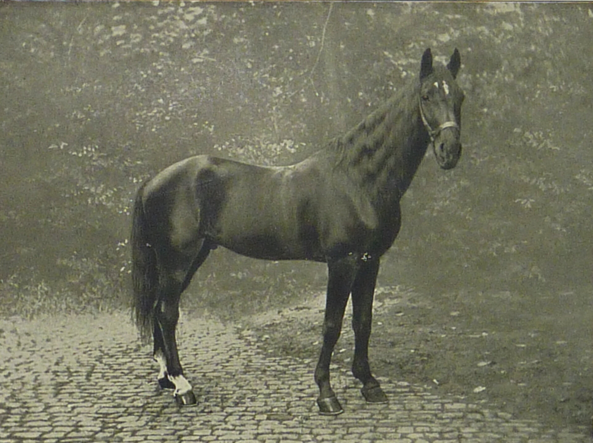
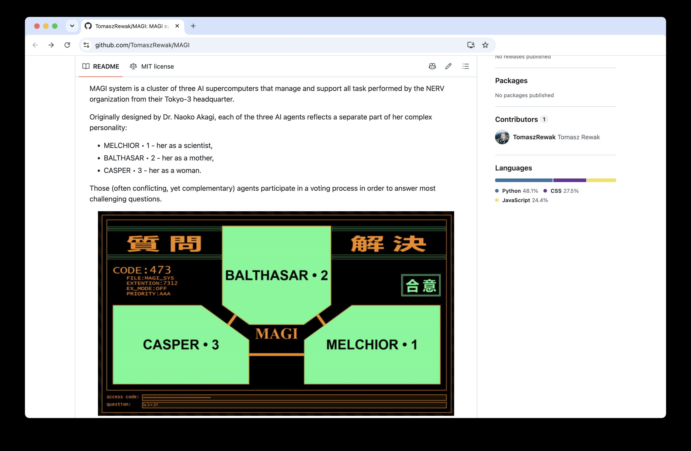

Prof. Francesco Zaccaria Scuola Futuro Lavoro, Milano — 28 Settembre . 01 Ottobre 2026
Licenza:
CC BY 4.0 — Creative Commons Attribuzione 4.0 Internazionale
Materiali di terzi:
diritti protetti e riservati ai rispettivi titolari; inseriti in buona fede a scopo didattico
Contatti:
linktr.ee/frazac — per segnalazioni e revisioni
Giornata 1
Introduzione all'IA generativa
Hello, Protest, London — photo Francesco Zaccaria, CC BY 2.0
Chi sono
Francesco Zaccaria: UI design e progettazione di oggetti digitali
Formatore e docente AFAM (13 anni di insegnamenti presso NABA)
L'IA nel mio lavoro, un passo alla volta: manutenzione, sistemistica, codice, assistente
Quattro giornate, un percorso
1. Capire: come funziona l'IA generativa
2. Creare: testi e immagini
3. Lavorare: l'IA in ufficio
4. Governare: norme, rischi, responsabilità
Come lavoreremo
Teoria, mano sul mento: tanti spunti, da leggere a più livelli
Laboratorio, mano su tastiera: imparare un mindset passa sempre dal fare
Domande, a mano alzata: qualsiasi domanda va fatta prioritariamente in aula
Mano disubbidiente... Protest, London — photo Francesco Zaccaria, CC BY 2.0
MIT Ad Hoc Committee on AI Use (2026)
Patto d'aula
Gradiente di uso AI nelle esercitazioni: seguiremo livelli (caldamente) consigliati
Perché dobbiamo usare un gradiente?
Si impara faticando altrimenti non si impara
La scala AIAS: cinque livelli d'uso dell'IA
1Nessuna IA
Attività in un ambiente controllato, pensato per escludere l'IA. Conoscenze, comprensione e abilità si dimostrano e si valutano in autonomia.
2IA nella fase preliminare
Esplorare l'argomento, fare la scaletta, prime ricerche: l'IA può aiutare. Si valuta la qualità della pianificazione e delle idee, che l'IA sia stata usata o no.
3Collaborazione con l'IA
L'IA aiuta a svolgere il compito sia nella pianificazione sia nella sua esecuzione: idee, bozze, commenti, revisione. Da sola non raggiunge il livello richiesto. Si valutano il lavoro e come i risultati dell'IA vengono vagliati, modificati e integrati con altri risultati.
4Coinvolgimento completo dell'IA
È previsto il completo coinvolgimento dell'IA in tutte le fasi dello svolgimento dell'attività. L'obiettivo viene raggiunto tramite la supervisione e il lavoro della persona e il lavoro della IA. Si valutano il pensiero critico e la competenza nel guidare l'IA.
5Esplorazione con l'IA
Uso creativo dell'IA per risolvere problemi, trovare idee nuove o soluzioni innovative nella disciplina. Gli approcci si possono progettare insieme, studenti e docenti.
Fare cose per risolvere un problema o raggiungere un obiettivo.
Uno scimpanzé impila casse per arrivare al cibo: gli esperimenti di W. Köhler a Tenerife (1914–1917), da Creation by Evolution (1928) — pubblico dominio, Wikimedia Commons
Propongo di considerare la domanda: “Le macchine possono pensare?”
Turing, A. M. (1950). Computing Machinery and Intelligence. Mind, 59(236), 433–460.
Il gioco dell'imitazione
Un giudice parla per iscritto con due interlocutori nascosti
Uno è una persona, l'altro una macchina
Se il giudice non li distingue, la macchina “passa”
Turing, 1950
L'illusione della comprensione
Il Turco meccanico, incisione da K. G. von Windisch, 1783 — pubblico dominio
Una macchina che gioca a scacchi…
Costruita da Wolfgang von Kempelen nel 1770
Batteva avversari in tutta Europa
Dentro, nascosto, c'era un giocatore in carne e ossa

Clever Hans, il cavallo che sapeva contare, 1910 — foto di K. Krall, pubblico dominio
Clever Hans, il cavallo che praticava l'aritmetica
Rispondeva ai calcoli battendo lo zoccolo
Nel 1907 lo psicologo Oskar Pfungst scoprì il trucco
Leggeva i segnali involontari di chi gli stava davanti
Pfungst, O. (1907). Das Pferd des Herrn von Osten
ELIZA e l'effetto ELIZA
1966: Joseph Weizenbaum scrive un programma che imita uno psicoterapeuta
Poche regole, nessuna comprensione
Eppure le persone gli si confidavano: l'effetto ELIZA è “la predisposizione ad attribuire a una sequenza di simboli generati dal calcolatore (in particolare delle parole) più senso di quello che ha realmente” (Hofstadter)
Weizenbaum, J. (1976). Computer Power and Human Reason Hofstadter, D. R. (1996). Fluid Concepts and Creative Analogies, «Preface 4: The Ineradicable Eliza Effect and Its Dangers», p. 157. Trad. it. F. Zaccaria.
Gli utenti di Eliza si confidavano con un software. È come parlare con una pianta?
02
Una storia lunga settant'anni
Estate 1956, Dartmouth College: dieci ricercatori danno un nome a un'idea. Intelligenza artificiale.
Ogni aspetto dell'apprendimento o di qualunque altra caratteristica dell'intelligenza può in linea di principio essere descritto con tanta precisione da poter costruire una macchina che lo simuli.
McCarthy, J., Minsky, M., Rochester, N., Shannon, C. (1955). A Proposal for the Dartmouth Summer Research Project on Artificial Intelligence. Trad. it. nostra.
Sistemi esperti: se… allora…
Un programmatore scrive le regole a mano, le azioni che seguono certe condizioni
Come un librogame: «Se apri la porta, vai al paragrafo 32»
11 maggio 1997, Kasparov perde contro Deep Blue — foto Peter Morgan/Reuters, post Instagram di photohousedetroit: instagram.com/p/DXrkAfRDuRs
Apprendimento automatico
Apprendimento automatico(machine learning)
Non scriviamo le regole: diamo esempi
La macchina ricava da sola gli schemi (pattern)
Graham, P. (2002). A Plan for Spam
Un esempio: la posta indesiderata
Migliaia di email già etichettate: “spam” o “non spam”
Il sistema impara quali tratti contano
Poi smista da solo le email nuove
Oggi i filtri uniscono regole fisse e apprendimento automatico
Due fasi
Addestramento(training): si estraggono gli schemi dai dati
Inferenza(inference): si applicano ai casi nuovi
Reti neurali: miliardi di manopole
Strati di “neuroni” collegati da numeri: i pesi
Addestrare significa regolare le manopole
I modelli di oggi ne hanno centinaia di miliardi
Azevedo, F. A. C. et al. (2009). Journal of Comparative Neurology, 513(5) Brown, T. B. et al. (2020). Language Models are Few-Shot Learners. NeurIPS Meta AI (2024). The Llama 3 Herd of Models · DeepSeek-AI (2024). DeepSeek-V3 Technical Report · Moonshot AI (2025). Kimi K2
30 novembre 2022: un'interfaccia di chat aperta a tutti
Il linguaggio diventa l'interfaccia universale
Per il pubblico, l'IA generativa “nasce” qui
Meno di quattro anni, più di un miliardo di utenti.
MIT Ad Hoc Committee on AI Use (2026). Report, p. 4
ITU (2025). Facts and Figures 2025 TechCrunch (2026, 27 febbraio). ChatGPT reaches 900M weekly active users Alphabet (2026, 22 luglio). Earnings call, Q2 2026 QuestMobile (2026). Rapporto H1 2026 sulle app IA in Cina

Un programmatore ha pubblicato su GitHub una emulazione dei supercomputer MAGI della serie animata Evangelion — Rewak, T., MAGI, licenza MIT: github.com/TomaszRewak/MAGI
03
Dentro un grande modello linguistico
LLM
LLM(Large Language Model, grande modello linguistico)
Un programma addestrato su enormi quantità di testo
ChatGPT, Claude, Gemini, Mistral, DeepSeek…
Prevedere la parola successiva
Token: parole e pezzi di parole
Il modello non legge lettere né parole intere
Legge token: una parola o un suo frammento
“intelligenza” → “intel” + “ligenza”
Una distribuzione di probabilità
“Oggi a Milano il cielo è…”
nuvoloso 41%
sereno 32%
grigio 15%
viola 0,1%
Valori illustrativi
Esercitazione
5′
Indovina il token
Leggo l'inizio di una frase.
Scrivete la parola successiva.
Confrontiamo: quante risposte uguali?
Il dialogo è una finzione
Il modello completa un testo che ha questa forma:
“Utente: … / Assistente: …”
Scrive la parte dell'assistente, un token alla volta
La finestra di contesto
Finestra di contesto(context window)
Tutto ciò che il modello “vede” in quel momento
Quello che resta fuori, se non è già nella memoria del modello, per lui non esiste
Rappresentazioni vettoriali
Rappresentazioni vettoriali(embeddings)
Ogni token diventa una lista di numeri
Un punto in uno spazio con migliaia di dimensioni
Conoscerai una parola dalla compagnia che frequenta.
Firth, J. R. (1957). A Synopsis of Linguistic Theory, 1930–1955. In Studies in Linguistic Analysis. Trad. it. nostra.
“Pesca”: frutto o sport?
“Ho mangiato una pesca” — frutto
“Andiamo a pesca” — attività
Il contesto sposta il vettore: il significato cambia
Quattro fasi di addestramento
1. Pre-addestramento
2. Affinamento supervisionato
3. Allineamento
4. Ricompense verificabili
1. Pre-addestramento
Pre-addestramento(pre-training)
Il modello legge una parte enorme di web, libri, trascrizioni di film, e forse altro (per esempio la messaggistica privata)
Impara a prevedere il testo: nasce un completatore
Azevedo, F. A. C. et al. (2009). Equal numbers of neuronal and nonneuronal cells make the human brain an isometrically scaled-up primate brain. Journal of Comparative Neurology, 513(5), 532–541.
Brown, T. B. et al. (2020). Language Models are Few-Shot Learners. NeurIPS, 33.
Chiriatti, M., Ganapini, M., Panai, E., Ubiali, M., Riva, G. (2024). The case for human–AI interaction as system 0 thinking. Nature Human Behaviour, 8, 1829–1830.
Chomsky, N., Roberts, I., Watumull, J. (2023, 8 marzo). The False Promise of ChatGPT. The New York Times.
Colombini, E., Tovena, C. (1982). Avventura nel castello [videogioco]. Dinosoft.
Contucci, P. (2026, 13 marzo). La dimensione geopolitica dell'IA. Rivista il Mulino.
Fonti della giornata — 2/5
Crowther, W., Woods, D. (1976–77). Colossal Cave Adventure [videogioco].
Dell'Acqua, F. et al. (2023). Navigating the Jagged Technological Frontier. Harvard Business School Working Paper 24-013.
Deng, J., Dong, W., Socher, R., Li, L.-J., Li, K., Fei-Fei, L. (2009). ImageNet: A large-scale hierarchical image database. CVPR 2009.
Graham, P. (2002). A Plan for Spam. paulgraham.com.
Held, R., Hein, A. (1963). Movement-produced stimulation in the development of visually guided behavior. Journal of Comparative and Physiological Psychology, 56(5), 872–876.
ITU — International Telecommunication Union (2025). Facts and Figures 2025.
Fonti della giornata — 3/5
Kahneman, D. (2012). Pensieri lenti e veloci. Milano: Mondadori.
Köhler, W. (1925). The Mentality of Apes. London: Kegan Paul (ed. orig. 1917).
Krizhevsky, A., Sutskever, I., Hinton, G. E. (2012). ImageNet Classification with Deep Convolutional Neural Networks. NeurIPS, 25.
Learning Innovation Practice (2026). AI Assessment Scale (AIAS) v2.1, da Perkins, Furze, Roe, MacVaugh. CC BY-NC-SA 4.0.
McCarthy, J., Minsky, M., Rochester, N., Shannon, C. (1955). A Proposal for the Dartmouth Summer Research Project on Artificial Intelligence.
Meta AI (2024). The Llama 3 Herd of Models. arXiv:2407.21783.
MIT Ad Hoc Committee on AI Use (2026). Report of MIT's Ad Hoc Committee on AI Use in Teaching, Learning, and Research Training.
Fonti della giornata — 4/5
Moonshot AI (2025). Kimi K2: Open Agentic Intelligence. arXiv:2507.20534.
Norman, D. A. (1988). The Design of Everyday Things. New York: Basic Books.
Perkins, M., Furze, L., Roe, J., MacVaugh, J. (2024). The Artificial Intelligence Assessment Scale (AIAS). Journal of University Teaching and Learning Practice, 21(6).
QuestMobile (2026). Rapporto H1 2026 sulle app IA in Cina; ripreso da TechNode, 14 luglio 2026.
Rewak, T. MAGI [software, licenza MIT]. GitHub.
Sanderson, G. — 3Blue1Brown (2024). Large Language Models explained briefly [video]. Computer History Museum.
Sciarrone, C. (1996). Uno [illustrazione]. PK – Paperinik New Adventures, 0. Disney Italia.
Fonti della giornata — 5/5
TechCrunch (2026, 27 febbraio). ChatGPT reaches 900M weekly active users.
Hofstadter, D. R. (1996). Fluid Concepts and Creative Analogies: Computer Models of the Fundamental Mechanisms of Thought. New York: Basic Books.
Tommaseo, N., Bellini, B. (1861–1879). Dizionario della lingua italiana, voce «Intelligenza». Torino: UTET.
Turing, A. M. (1950). Computing Machinery and Intelligence. Mind, 59(236), 433–460.
Vaswani, A. et al. (2017). Attention Is All You Need. Advances in Neural Information Processing Systems, 30.
Weizenbaum, J. (1976). Computer Power and Human Reason. San Francisco: W. H. Freeman.